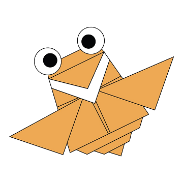

There are two types of camels: One humped or “dromedary” camels and two humped Bactrian camels.

Their Feet Work Like Salad Tongs. Skin Crystal Enable Them To Change Color At Will.

Cicada's are oval-shaped, winged insects that provide a buzzing and clicking song heard in nature throughout the summer.

They have great camouflage for their environment. Their eyes are different to normal bears.

They are one of only a small number of species to pass the ‘mirror test’ – a test of self recognition.